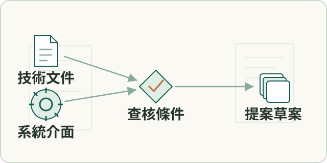

要解決的問題
聯合提案需把跨公司控制面、資料面及裝置責任寫成可查核計畫。
輸入、處理與產出
- 輸入
- 跨組織構想、技術需求及合作方責任。
- 處理方式
- 整理控制面、資料面、裝置端介面，將依賴與責任轉成查核條件；版本修訂同時核對引用。
- 產出
- 政府格式計畫書、提案簡報與可回查修訂紀錄。
適用範圍
為未送件草案；不當作得標、正式部署或研發完成成果。
成果與驗證
完成政府格式計畫書及提案簡報，釐清跨公司介面與查核點；目前為未送件草案。
零信任架構
跨組織提案
收斂跨組織提案的技術文件、版本、系統介面及查核條件。

聯合提案需把跨公司控制面、資料面及裝置責任寫成可查核計畫。
為未送件草案；不當作得標、正式部署或研發完成成果。
完成政府格式計畫書及提案簡報，釐清跨公司介面與查核點；目前為未送件草案。
零信任架構